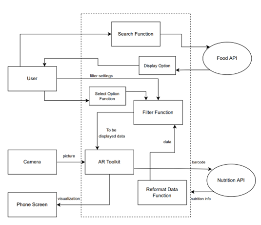
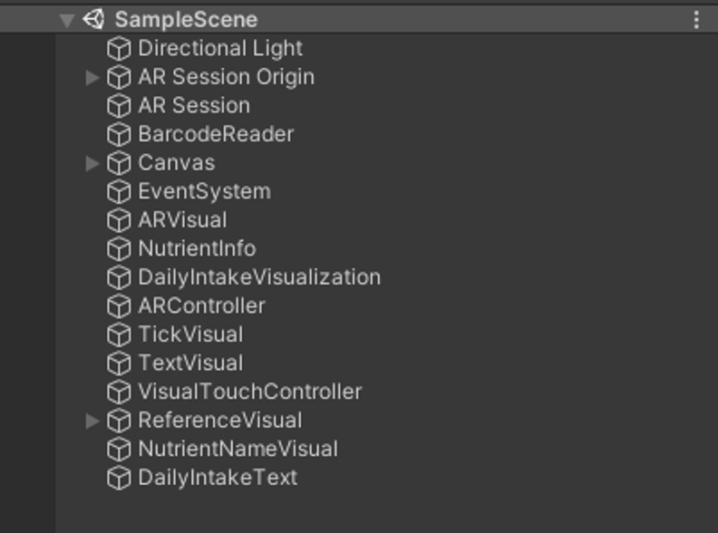
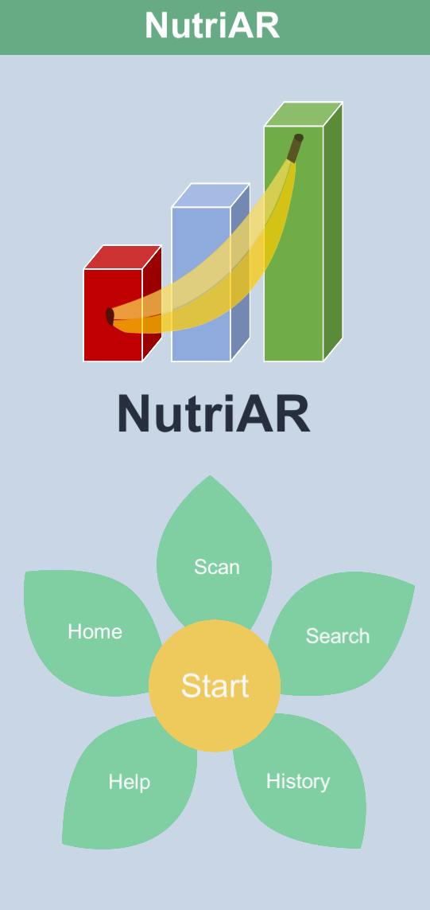
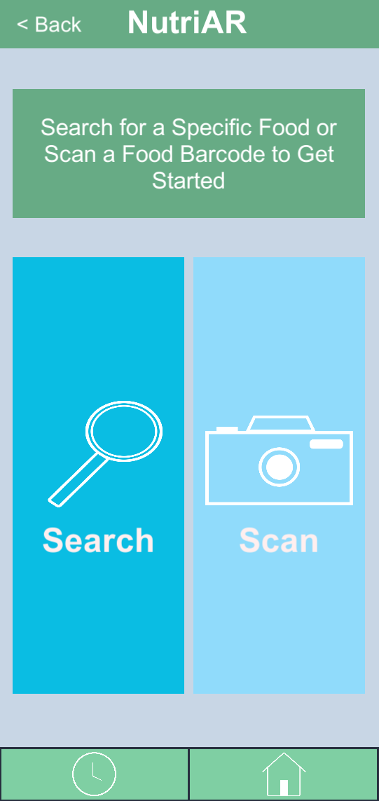
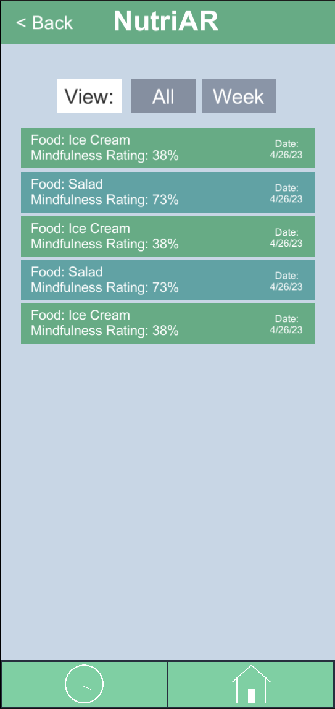
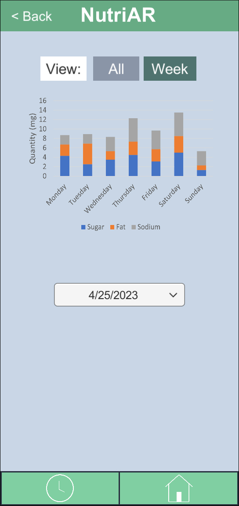
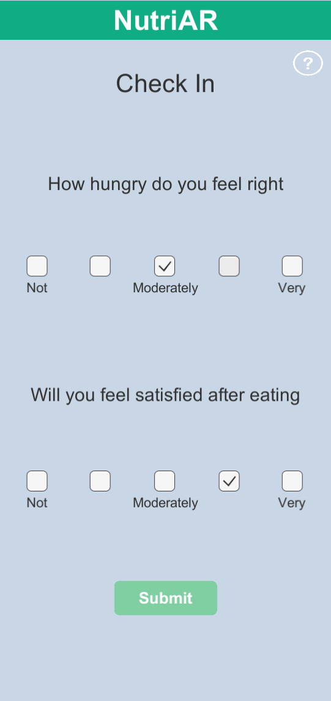
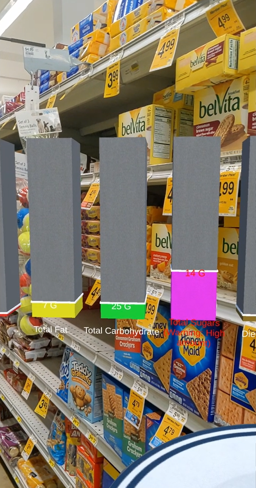

Our goal was to design an application that helps users track their nutrition, visualize their consumption, and make more mindful eating decisions. To support this, our team leveraged augmented reality (AR) to present nutritional information as tangible, real-world representations. We chose this approach to make abstract nutritional data more intuitive by mapping it to familiar portions of staple foods.

I led the UI/UX design for the project. I began by creating low-fidelity sketches to explore layout and interaction patterns, then developed a high-fidelity prototype in Figma.
To evaluate usability, I conducted a heuristic analysis of the prototype and refined the design based on identified issues. I also facilitated user testing by guiding participants through key tasks and collecting structured feedback through surveys. Using these insights, I iterated on the design to improve clarity and usability.
In the final stage, I implemented the interface in Unity, integrating the front-end experience with API calls and functionality developed by my backend team members.






The NutriAR prototype enabled users to scan packaged food barcodes through the app’s camera interface, generating a 3D visualization of nutritional content in real space. This included both a graphical breakdown of nutrients and corresponding representations using familiar food portions, making the data more accessible and engaging. The app also prompted users with a post-scan check-in to reflect on their meal choices.
Through this project, I developed proficiency in prototyping within Unity, a tool I had not previously used. I also gained experience working through an iterative design process in close collaboration with developers, balancing technical constraints with user needs. Most importantly, I deepened my understanding of user research and learned how structured feedback and usability testing directly inform more effective and intuitive design decisions.
